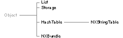

Copyright ©1995 by NeXT Computer, Inc. All Rights Reserved.
| 3 |
Common Classes and Functions
| Library: | libsys_s.a | |
| Header File Directories: | /NextDeveloper/Headers/objc /NextDeveloper/Headers/streams /NextDeveloper/Headers/defaults /NextDeveloper/Headers/appkit | |
| Import: | appkit/appkit.h or individual header files |
| Introduction |
| The classes and functions described in this chapter can serve a wide variety of different kinds of applications. They get the name "common" from the fact that they're generally useful and commonly used. Most provide ways of managing data and resources within a program. They can be used in conjunction with any of the NEXTSTEP software kits. |
|  |
| Figure 3-1. Common Classes Inheritance Hierarchy
The table below is a guide to the facilities documented here. The first column states, in a few words, a kind of data-management or resource-management service. The second column says where to look in the chapter; it names the class or principal function that provides the service. Consult the documentation for the functions and classes mentioned to learn whether they're right for your application. |
| Facility | Class or Function | |
| Storage allocation | NXZoneMalloc() NXCreateZone() NXMallocCheck() Storage class | |
| Unordered collections | HashTable class NXCreateHashTable() NXHashInsert() NXStringTable class | |
| Ordered collections | List class Storage class | |
| Recording user preferences | NXRegisterDefaults() | |
| Localizing resources | NXBundle class NXLocalizedString() | |
| Exception handling | NX_RAISE() NXDefaultExceptionRaiser() NXSetUncaughtExceptionHandler() NXAllocErrorData() | |
| Dynamic loading of code | NXBundle class | |
| Input-output streams | NXOpenFile() NXOpenMemory() NXRead() NXPutc() | |
| Archiving | NXOpenTypedStream() | |
| and typed streams | NXReadObject() NXReadType() | |
| Classifying and | NXIsAlpha() | |
| converting characters | NXToAscii() |
| Because the Application Kit makes use of all the common classes and almost all of the common functions, importing the appkit.h header file automatically imports all but one of the header files that declare common classes and functions. Since appkit.h corresponds to a precompiled version of the header files, importing it rather than individual files dramatically reduces the time required for compilation. The only common header file that's omitted, and that you might need to import individually, is streams/streamsimpl.h. It declares rarely used functions that implement new versions of a stream. |